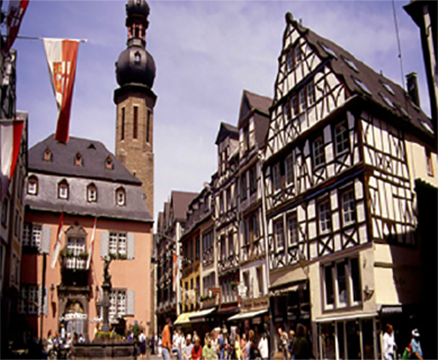

Auf dem Burgberg mitten in der Stadt thront majestätisch die Reichsburg Cochem. Sie wurde um 1000 erbaut, 1689 zerstört und 1874 bis 1877 wiedererrichtet. Selbstverständlich und ohne Konkurrenz weitum ist sie nicht nur die wichtigste und attraktivste Sehenswürdigkeit der Stadt Cochem, sondern der gesamten Gegend. Die vielen gut erhaltenen Reste der historischen Stadtmauer mit ihren alten Befestigungswerken wie dem Enderttor-Turm mit Torwächterwohnung aus dem Jahre 1332, dem Wehrturm mit Balduinstor an der Kirchhofsmauer (Obergasse), dem Burgfrieden-Tor mit Wehrgang. Eine Zierde für die Stadt sind auch das 1739 im Barockstil erbaute Rathaus, der Marktplatz Erleben-Marktplatz-kleinmit Martinsbrunnen und die alten, mit Moselschiefer gedeckten Fachwerk-Giebelhäuser in den engen bergigen Gassen. Vom Marktplatz aus führen alte, winkelige Steintreppen hinauf zum Klosterberg. Das auf einem Bergvorsprung liegende, um 1630 erbaute Kapuzinerkloster war bis 1802 Kloster und ist jetzt das Kulturzentrum der Stadt. Für den Aufstieg zur Reichsburg nimmt man am besten den Weg über das „Tummelchen” mit seinem alten »Zuckertürmchen«, das zur Bewachung der Stadtgrenze diente, und auf den Resten der historischen Stadtmauer steht, welche noch bis hin zur Kuppe des „Tummelchen” erhalten ist.

Jeden Freitag vom 04. Mai bis 05. Oktober, außer dem 08. Juni, wird auch eineTagesfahrt nach Koblenz angeboten – am „Deutschen Eck“ fließen Mosel und Rhein zusammen.